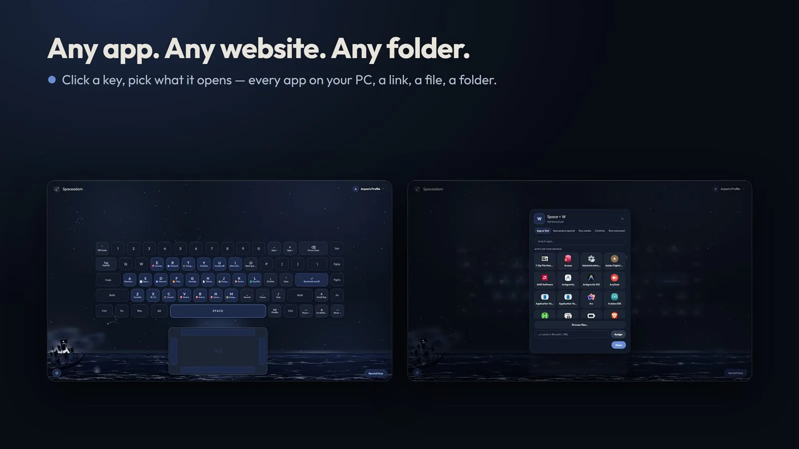

Nur IfranArpon
I'm an engineering student who builds things people really use: three Windows apps on the Microsoft Store, and a desk robot dog with a face.
In May 2026 I wrote a small script for my own keyboard. Five months later it is three apps on the Microsoft Store and a robot dog taking shape on my desk.
My projects
Three things I designed, built and shipped myself. Each one appears in its own colours, the way it looks in real life, and says plainly where it stands.
Spaceadom
Hold Space, tap a letter, and the app opens. Tap it again and it is gone.
- A ring of your apps under the mouse: hold the middle button, drift towards one, let go.
- Touchpad edges become sliders for brightness, volume and video.
- Rust and Tauri. Windows 10 and 11, x64 and ARM64. No account, no ads.


Spike and Desk Buddy
A desk robot dog with a face, a memory and a personality.
- While his body is being built, the same character lives on Windows and Android.
- His brain runs on your own computer: wake words, memory, alarms and reminders.
- The body: ESP32-S3 boards, a 4.3-inch touch-screen face, micro servos and a 3D-printed shell modelled in SolidWorks.
FileZ
Your Downloads folder, tidy by itself.
- Waits for downloads to finish, then files them where they belong.
- Nothing is ever deleted, and every move has a Put back button.
- No AI, no account, no internet: FileZ has no network code at all.
The road so far
Every date comes from a public release or a repository on GitHub.
SpaceToggle OS
An AutoHotkey script for my own keyboard, tested with two friends: hold Space, tap a letter, the app opens.
The first native build
The same idea rebuilt as a real Windows app in Rust and Tauri.
It becomes Spaceadom
A new name and the first public release. From here on, roughly one release a day.
Visit SpaceadomThe mouse ring
Hold the middle mouse button and a ring of your apps blooms around the cursor.
The Microsoft Store
Spaceadom goes to the Store, published as SpaceZ.
FileZ begins
A tidy Downloads folder with a Put back button on every move.
Spike goes public
The companion app, his brain, the firmware and the Desk Buddy CAD.
Meet SpikeTwo websites in a day
Spike's own site, and Spaceadom's try-it-in-your-browser site.
Building next
Desk Buddy's body, and Spaceadom for Mac and Linux, both in beta.
What I do
The tools and skills I use most, each one learned by building something real with it.
Windows apps
Rust and Tauri v2: system-wide keyboard hooks, overlays, tray apps and installers, for x64 and ARM64. Packaged and published on the Microsoft Store.
Spaceadom and FileZRobotics and CAD
ESP32-S3 boards, servos and sensors; parts modelled in SolidWorks from Python scripts, then 3D-printed and tested.
Desk BuddyAndroid and AI
Flutter apps, and a companion whose brain runs on your own computer, with conversation through Google Gemini.
SpikeWebsites
Fast, accessible sites with scroll animation, built by hand in HTML, CSS and JavaScript, and found on search.
The Spaceadom siteHi, I'm Arpon.
I'm an engineering student, and I learn by building. I start, hit a wall, read, fix it and release again.
It began with one small wish: to open an app without hunting for it. That script became Spaceadom, and Spaceadom taught me Rust, Windows internals and how to ship to the Microsoft Store. FileZ and Spike came next, and Spike pulled me into electronics, CAD and 3D printing.
I keep a written record of every bug, what caused it and how it was fixed, so the same mistake never ships twice. And I only call something finished when it works on a real machine.
- Name
- Nur Ifran Arpon
- Studying
- Diploma of Engineering, Monash College
- Publishes as
- SpaceZ
- Speaks
- English and Bangla
How I work
Four habits behind every release. Each one came from something that went wrong first.
Learn by shipping
Start, hit the wall, fix it, release. A small release today teaches more than a perfect plan next month.
Real users first
A report from someone using the app beats any guess. The fix starts with their log, not my theory.
Write every bug down
What broke, why, and how it was fixed, so the same mistake never ships twice.
Say where it stands
Live means live. In development means in development. Nothing is listed until it really works.
Say hello.
A question about one of my projects, a study or research idea, or just a hello: I read every message myself.
Need something built for a business? That is what SpaceZ, my studio, is for.